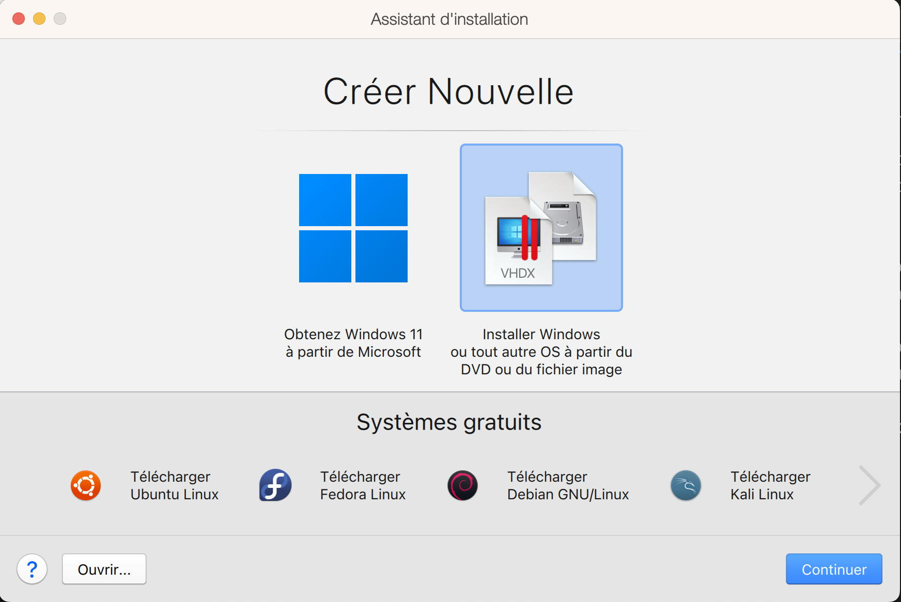
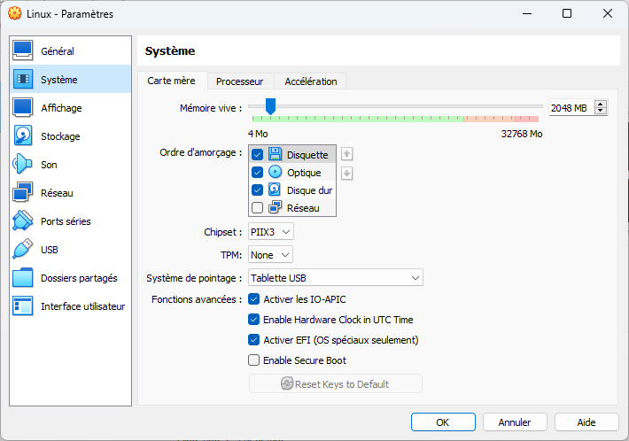

Installation de Linux/Ubuntu sur une Machine Virtuelle
Installation d'une distribution Linux/Ubuntu sur une machine virtuelle
Machine Virtuelle
Une Machine Virtuelle (VM, Virtual Machine) permet de simuler un ordinateur complet.
C'est très utile pour essayer de nouveaux systèmes (un Linux et un Mac par exemple) ou avoir plusieurs systèmes identiques (plusieurs versions de noyaux Linux). On peut modifier un système installé sur une machine virtuelle sans alterer le système d'exploitation principal.
Il existe de nombreuses applications de machines virtuelles, gratuit ou payante. Nous allons en utiliser deux :
- https://www.parallels.com/ : payant ais le seul utilisable (pour l'instant) sur un mac avec u processeur ARM.
- https://www.virtualbox.org/ : gratuit et utilisable sur une machine x86, sous windows ou Linux.
Les machines virtuelles partageront souvent les périphériques USB, réseau, clavier/souris de la machine hôte, mais ce n'est pas une obligation. Tout peut être simulé si besoin.
Création d'une machine virtuelle
Commençons par créer une machine virtuelle sur laquelle on pourra installer n'importe quel système par la suite.
Avec Parallels
Avec Parallels
On commence par créer une machine virtuelle vierge en allant dans Fichier > nouveau... :

- on choisit
installer windows ou tout autre OS à partir Du DVD ou du fichier image - on coche
continuer sans sourcepuiscontinuer - On choisit
ubuntu Linuxcomme système d'exploitation (ceci n'a pas d'importance, c'est juste informatif) - puis on crée la machine virtuelle
La machine va se lancer. Comme il n'y a pas de système d'installé, c'est le Menu UEFI qui est affiché :

Le curseur de la souris et le clavier sont lié à la machine./ Pour revenir au système mac appuyez sur les touches control et option en même temps.
Arrêtons la machine (menu Actions > Stopper) pour voir ses paramètres (l'icône engrenage).
Avec VirtualBox
Avec VirtualBox
On commence par créer une nouvelle machine virtuelle :

Ne choisissez pas trop de mémoire (j'ai mis juste 2048MB), sans quoi votre machine virtuelle prendra trop de place.
Pour le disque dur, choisissez au moins 20GB, les 8GB initiaux ne sont pas assez important, Ubuntu prend une 20aine de GB :

Si vous des machines virtuelles avec VirtualBox puis que vous les supprimez, il faut aussi penser à supprimer les disques dur que vous avez créez. Pour cela aller dans Fichier > Outils > gestionnaire de médias virtuels (CTRL+D) :

Puis supprimez les disques durs inutiles. Cela vous évitera des erreurs où VirtualBox ne peux créer de disque dur avec le même nom car il existe déjà
Configuration de la machine
Une fois la machine créée, on peut si besoin en changer les caractéristiques (nombre de cœur, mémoire, etc). Plus vous allouez de ressource à la machine virtuelle, moins vous en aurez pour votre machine principale : faites des compromis.
Avec Parallels
Avec Parallels
On voit le matériel qui est simulé par cette machine :

Avec VirtualBox
Avec VirtualBox
Ajoutez de la mémoire vidéo et cochez l'accélération 3D :

Une dernière chose à vérifier est l'ordre de boot de la machine. IL est important que lors de la première installation, le disque de démarrage soit le lecteur de dvd, puis pour les boots ultérieurs ce soit le disque dur sur lequel le système est installé.
Avec Parallels
Avec Parallels

L'ordre est :
- disque dur
- dvd
- clé usb
Avec VirtualBox
Avec VirtualBox

L'ordre est :
- disquette
- dvd
- disque dur
Installation de Linux/Ubuntu
Suivre le tutoriel officiel : https://doc.ubuntu-fr.org/tutoriel/amorcer_sur_cd_ubuntu
On va utiliser une image disque de ubuntu disponible sur le site. Prenez la version LTS (Long Time Support), la 22.04.3 à l'heure où je tape ces caractères (août 2023) et l'image fait 5Go.
Les différentes images des versions sont également disponibles à l'adresse suivante (utile si vous n'avez pas un x86, mais un mac ARM par exemple) :
https://cdimage.ubuntu.com/jammy/daily-live/current/
Une fois l'image téléchargée, on va démarrer sur le lecteur d dvd de la machine virtuelle et suivre les instructions.
Avec Parallels
Avec Parallels
L'ordre de boot par défaut est :
- disque dur
- dvd
- clé usb
Comme il n'y a rien sur le disque dur pour l'instant, le système passera automatiquement au dvd. Il faut donc faire en sorte que le lecteur de dvd contienne notre image téléchargée :

Mon ordinateur est un mac ARM, j'utilise donc une image ISO qui correspond à mon système. SI vous utilisez un ordinateur x86, ce n'est pas cette image au'il faudra utiliser, mais celle qui correspond à votre système : ubuntu-22.04.3-desktop-amd64.iso
Avec VirtualBox
Avec VirtualBox

Au boot vous devriez avoir l'image suivante, qui prouve que c'est bien l'image du dvd qui a booté :

Suivez les instructions du logiciel d'installation, vous pouvez garder les informations par défaut. Le logiciel va vous demander de créer un compte :
- votre nom peut être ce que vous voulez.
- votre nom d'utilisateur doit en revanche ne pas contenir d'espace ni de caractères accentué ou spéciaux. Sinon, tôt ou tard, cela vous sautera à la figure. Choisissez le login que vous avez à la fac ou à l'école. Dans mon cas c'est
fbrucker.

Fin d'installation
Vous pouvez maintenant éteindre votre machine virtuelle. Lorsque vous rallumerez votre machine, vous serez devant une bannière de login Linux/Ubuntu :

L'ordinateur a bien démarré sur le disque dur. Rentrez le mot de passe associé à votre compte pour vous retrouver devant votre bureau :